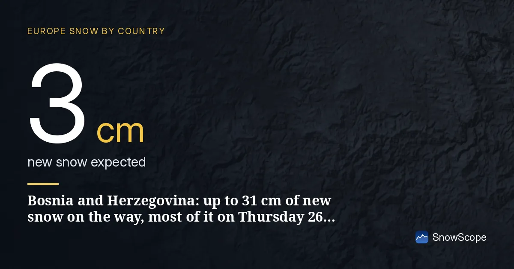
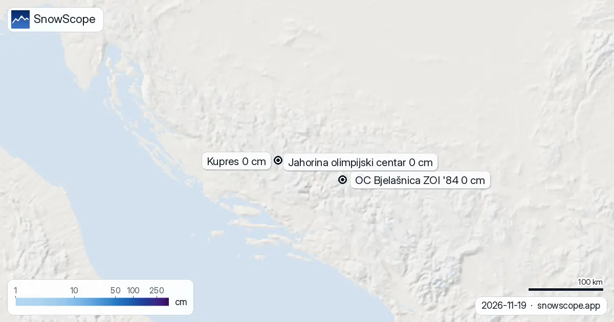

Bosnia and Herzegovina: up to 31 cm of new snow on the way, most of it on Thursday 26 November
The week ahead could bring up to 31 cm to the snowiest slopes in Bosnia and Herzegovina, 2 cm of it in the next three days. The biggest day looks like Thursday 26 November, with up to 27 cm.
See the live snow forecast for OC Bjelašnica ZOI '84 in the SnowScope appSnow depth, powder alerts and the 3D map, free.
The snow on its way
Forecasts this far out move. The timing is usually more reliable than the totals, so keep a flexible plan and check again two days before you go.
Snow covers roughly 0 km² in Bosnia and Herzegovina on 19 November, little changed from yesterday.
| Resort | Snow depth | New snow, 72 h | Coming, next days | Top |
|---|---|---|---|---|
| OC Bjelašnica ZOI '84 | 0 cm | 0 cm | 3 cm | 2,056 m |
| Jahorina olimpijski centar | 0 cm | 0 cm | 2 cm | 1,886 m |
| Kupres | 0 cm | 0 cm | 1 cm | 1,528 m |

The next days
Expect up to 2 cm on the snowiest slopes by the third day; the seven-day total reaches 31 cm.
Thursday 26 November stands out, with up to 27 cm in a day.
Further out, days 8 to 14 show up to 13 cm on the snowiest slopes.
Where to ski first
The 12 resorts in Bosnia and Herzegovina on our map are still green.
The latest snowfall
The last three days were dry or nearly so, with no more than 0 cm anywhere.
The week in numbers
Snow cover in Bosnia and Herzegovina over the last days: 16 November 490 km²; 17 November 1,060 km²; 18 November 0 km²; 19 November 0 km².
The deepest resort changed hands 2 times this week.
How much of the country is white
No height band is mostly white yet. Over the week the white area has hardly moved from 0 km².
The neighbours today
For comparison, the neighbours on the same day: Croatia: 0 % white, deepest Platak with 0 cm, up to 29 cm in the week ahead; Serbia: 0 % white, deepest Kopaonik with 0 cm, up to 7 cm in the week ahead.
What it means on the slopes
A quiet spell: groomed runs stay reliable, the snow off the pistes gets older and firmer.
With more snow in the forecast, the next days should improve things further.
Tips for skiers
- Read the local avalanche bulletin before going off-piste.
- Fresh snow on a cold base sticks badly: take care on steep slopes.
- Early-season snow is thin over rocks: ski the groomed runs first.
About these numbers
Resort snow depths are the deepest snow on the resort's upper slopes from the SnowScope snow model (about 1 km, run of 19 November); they are estimates for an area, not a measurement at one point. Station values are measurements on the date shown. Forecasts can change. Always read the official avalanche bulletin before going off-piste.
Cite this report
For research, teaching or the press: the numbers and charts are free to reuse under CC BY 4.0 with this citation.
SnowScope (2026), Bosnia and Herzegovina: up to 31 cm of new snow on the way, most of it on Thursday 26 November, https://snowscope.app/blog/en/2026/11/bosnia-and-herzegovina-snow-on-the-way-19-november-2026.html, accessed 2026-11-19
SnowScope (Atlas Labs). (2026, November 19). Bosnia and Herzegovina: up to 31 cm of new snow on the way, most of it on Thursday 26 November. SnowScope snow reports. https://snowscope.app/blog/en/2026/11/bosnia-and-herzegovina-snow-on-the-way-19-november-2026.html
BibTeX
@misc{snowscope2026bosniaandherzegovinasnow,
author = {{SnowScope (Atlas Labs)}},
title = {Bosnia and Herzegovina: up to 31 cm of new snow on the way, most of it on Thursday 26 November},
year = {2026},
month = nov,
howpublished = {\url{https://snowscope.app/blog/en/2026/11/bosnia-and-herzegovina-snow-on-the-way-19-november-2026.html}},
note = {Published 2026-11-19 13:38 UTC; accessed 2026-11-19}
}· CC BY 4.0 · Methods, data and tools →
OC Bjelašnica ZOI '84: snow and temperature by height, this winter vs last (tools) →
Follow OC Bjelašnica ZOI '84
Free: a message when fresh snow is coming, and the forecast every morning.
More snow reports

Himalaya snow cover in November 2026 from NASA MODIS: snow on 610,409 km² of ground above 2,000 m between the Hindu Kush and Bhutan, half the clear ground white from about 4,800 m in Nepal and 3,600 m in the Karakoram. The NDSI explained, plus shadows, cloud and the low autumn sun.

SnowScope's peak finder is a free peak finder app: point your phone at the mountains and it names the summits, with height, distance and climb time. Our tests: 98 % of the summits it lists are really in sight, and on real photos it corrected compass errors of up to 105° to 0.15°. Free with 3 names, every peak for $0.99 once.

We compared the snow on 10 November with each winter's deepest snow at 46 ski resorts over 46 winters. A snowy start helps, but less than many skiers think.